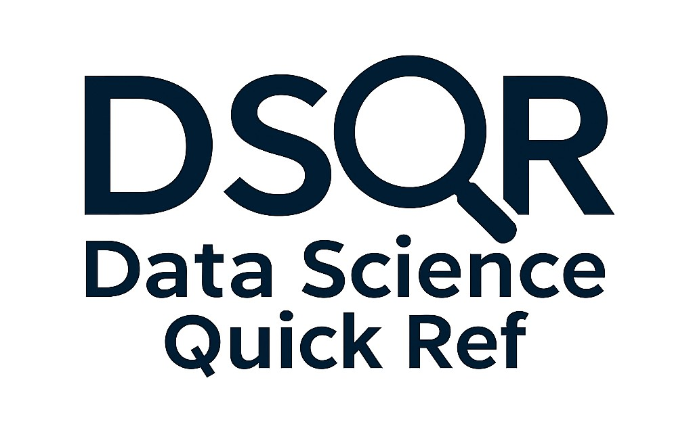

Dmitriy Bolotov

Let's Connect
Navigation
Welcome
I am a data scientist focused on applied machine learning and practical AI.
Over the past decade, I’ve worked in adtech and IoT & industrial analytics, developing solutions using predictive modeling, anomaly detection, and deep learning.
This site shares projects and open-source tools I've worked on.
Tools

DS QuickRef -
A concise, opinionated reference for practical data science and machine learning workflows in
Python.

Time Series Smoothing Visualizer -
Interactive app that helps users understand six common smoothing techniques for time
series data. | GitHub

Visual Time Series Generator -
Interactive app for generating time series data. Includes options for missing values and
anomalies. | GitHub
Python and R Packages
R and Python packages for exploratory analysis, model development, and deployment:
- minieda – Minimalist Python package for summarizing DataFrames.
- pmml – Export predictive models and preprocessing steps from R to PMML, an open standard for deployment.
- neighbr – K-nearest neighbors for classification, regression, and clustering in R.
- amelie – Anomaly detection using maximum likelihood estimation. | Intro
Case Studies
Predicting Gym Member Churn to Support Targeted Retention – Churn analysis using behavioral and contract data from a fitness gym. Includes cohort breakdowns, Random Forest modeling (93% PR-AUC), churn risk segmentation, and targeted retention strategies. | Medium article | Jupyter notebook